5 基于组件的分解模式
11 月 1 日，星期一，11:53
Addison 和 Austen 已决定采用基于组件的分解方法，但对每种分解模式的具体细节仍不确定。他们尝试研究这种方法，却没有在互联网上找到太多资料。于是，两人再次与 Logan 在会议室碰面，请他说明这些模式究竟是什么，以及应当如何使用。
“Logan，先听我说，”Addison 说，“我们真的很感谢你花这么多时间，帮助我们启动迁移过程。我知道你自己也忙着处理各种紧急问题。”
“没问题，”Logan 说，“我们这些‘消防员’必须互相支持。我以前也经历过你们现在的处境，所以知道在这类事情上摸黑前进是什么感觉。况且，这次迁移的关注度很高，你们必须第一次就把事情做对，因为不会有第二次机会。”
“谢谢你，Logan，”Austen 说，“我大约两小时后有一场比赛，所以我们尽量长话短说。你之前讲过基于组件的分解，我们也选择了这种方法，但在网上找不到多少相关资料。”
“这并不奇怪，”Logan 说，“目前关于这些模式的文字还不多，不过我知道今年晚些时候会有一本书出版，详细介绍它们。我第一次接触这些分解模式，是大约四年前参加一场会议时，听一位资深软件架构师讲解。我对这种迭代且有条理的方法印象很深：它能让系统安全地从单体架构走向基于服务架构、微服务等分布式架构。从那以后，我一直在使用这些模式，而且相当成功。”
“能给我们演示一下这些模式如何运作吗？”Addison 问。
“当然，”Logan 说，“我们一次看一个模式。”
第 4 章介绍的基于组件分解，是在代码库具有一定结构、并按命名空间或目录分组时拆分单体应用的一种高效技术。本章介绍一组称为基于组件的分解模式的模式。它们描述如何重构单体源代码，形成一组定义良好、最终可以转化为服务的组件。这些分解模式能显著降低把单体应用迁移到分布式架构的难度。
图 图 5.1 展示了本章各项基于组件分解模式的路线图，以及它们如何协同拆分单体应用。把单体应用迁移到分布式架构时，最初应当依次使用这些模式；迁移期间维护单体应用时，再单独使用相应模式。这些分解模式概括如下：
- “识别组件并确定其大小”模式：通常是拆分单体应用时采用的第一个模式，用于识别、管理组件并为组件确定适当大小。
- “汇集公共领域组件”模式：用于整合应用各处可能重复的公共业务领域逻辑，减少最终分布式架构中潜在的重复服务数量。
- “扁平化组件”模式：用于折叠或展开领域、子领域和组件，确保源代码文件只存在于定义良好的组件之中。
- “确定组件依赖关系”模式：用于识别并改进组件依赖，判断从单体架构迁移到分布式架构是否可行，并估算总体工作量。
- “创建组件领域”模式：用于把组件归入应用中的逻辑领域，并重构组件的命名空间和/或目录，使之与特定领域保持一致。
- “创建领域服务”模式：把单体应用中的逻辑领域迁移到独立部署的领域服务，从而在物理层面拆分单体架构。
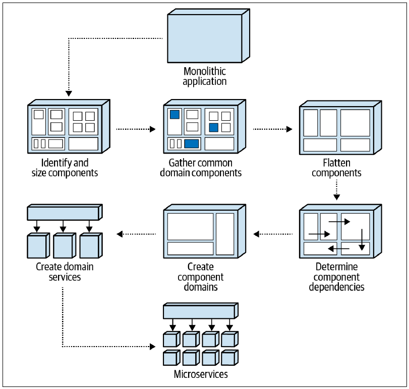
本章介绍的每个模式都分为三个部分。第一部分“模式说明”解释模式如何运作、为何重要，以及应用模式后会得到什么结果。由于迁移期间大多数系统都处于持续变化之中，第二部分“治理适应度函数”介绍应用模式之后可采用的自动化治理，用于在后续维护过程中持续分析并验证代码库的正确性。第三部分则使用现实中的 Sysops Squad 应用（参见第 1 章“Sysops Squad 案例简介”）演示模式的使用方法，以及应用模式后系统发生的变化。
5.1 架构故事
本章将在每个 Sysops Squad 案例中使用架构故事，记录和描述会影响应用结构的代码重构。用户故事描述需要实现或修改的功能，而架构故事描述的是影响应用整体结构、同时满足某项业务驱动因素——例如提高可扩展性或缩短上市时间——的具体代码重构。
例如，架构师认为需要拆分支付服务，以便在增加新的支付类型时获得更好的可扩展性，就可以创建如下架构故事：
作为一名架构师，我需要解耦支付服务，以便在增加新的支付类型时获得更好的可扩展性和敏捷性。
我们认为架构故事不同于技术债故事。技术债故事通常记录开发人员需要在后续迭代中完成的“代码清理”工作；架构故事则记录为了支持某项架构特征或业务需求而必须尽快完成的变更。
5.2 “识别组件并确定其大小”模式
任何单体迁移的第一步，都是应用“识别组件并确定其大小”模式。这个模式的目标，是识别并登记应用的架构组件，也就是逻辑构建块，然后为这些组件确定适当大小。
5.2.1 模式说明
服务由组件构建，因此不仅要识别应用中的组件，还必须让它们具有适当大小。这个模式用于找出过大——承担过多职责——或过小——承担职责不足——的组件。相对于其他组件过大的组件，通常会与更多组件发生耦合，更难拆成独立服务，也会使架构的模块化程度降低。
遗憾的是，组件大小很难确定。源文件数、类数和总代码行数都不是理想指标，因为每位程序员设计类、方法和函数的方式不同。我们发现，一项有用的组件规模指标，是计算给定组件中的语句总数，也就是某个命名空间或目录所含全部源文件的语句数之和。
一条语句是源代码中执行的一项完整动作，通常以特殊字符结束，例如 Java、C、C++、C#、Go 和 JavaScript 中的分号，或 F#、Python 和 Ruby 中的换行符。虽然这不是完美指标，但至少能很好地反映组件承担了多少工作，以及组件的复杂程度。
应用内各组件的大小保持相对一致十分重要。一般而言，组件大小应落在平均组件大小的一到两个标准差之内。此外，每个组件所占代码百分比应当在各组件之间大致均匀分布，不应有显著差异。
许多静态代码分析工具可以显示单个源文件的语句数量，但其中不少工具不会按组件累计语句总数。因此，架构师通常必须进行手工或自动化后处理，按组件累计语句总数，再计算每个组件所占的代码百分比。
无论采用什么工具或算法，这个模式都需要收集并计算表 表格 5.1 所示的信息和指标。
| 组件名称 | 组件命名空间 | 百分比 | 语句数 | 文件数 |
|---|---|---|---|---|
| 账单支付 | ss.billing.payment |
5 | 4,312 | 23 |
| 账单历史 | ss.billing.history |
4 | 3,209 | 17 |
| 客户通知 | ss.customer.notification |
2 | 1,433 | 7 |
- 组件名称
-
在应用图和文档中保持一致的组件描述性名称和标识符。名称应尽可能做到自描述。例如，表 表格 5.1 中的“账单历史”很清楚地表明，该组件包含用于管理客户账单历史的源文件。如果不能立即辨认组件的独特角色和职责，就应考虑为组件以及可能对应的命名空间换一个更具描述性的名称。例如，“工单管理器”这个名称对其在系统中的角色和职责留下了太多疑问，应当重命名。
- 组件命名空间
-
组件的物理或逻辑标识，表示实现该组件的源代码文件在哪里分组和存储。这个标识通常使用命名空间、包结构（Java）或目录结构表示。以目录结构表示组件时，我们通常把文件分隔符转换为点号，并创建相应的逻辑命名空间。例如，目录
ss/customer/notification中源文件的组件命名空间为ss.customer.notification。有些语言要求命名空间与目录结构一致，例如 Java 的包；另一些语言并不强制这一约束，例如 C# 的命名空间。无论使用哪种标识方式，都应确保应用所有组件保持一致。 - 百分比
-
组件所含源代码占整个代码库的百分比，用于表示组件的相对大小。这个指标有助于找出在整个应用中显得过大或过小的组件。计算方法是：组件对应的全部源文件语句总数，除以应用整个代码库的语句总数。例如，表 表格 5.1 中
ss.billing.payment组件的百分比为 5，表示该组件占整个代码库的 5%。 - 语句数
-
组件所含全部源文件的源代码语句总数。这个指标不仅有助于判断应用中各组件的相对大小，也能反映组件的整体复杂度。例如，一个看似简单、职责单一的“客户愿望清单”组件可能包含 12,000 条语句，说明愿望清单项目的处理或许比表面上复杂。这个指标也是计算上述百分比指标所必需的。
- 文件数
-
组件中源代码文件的总数，包括类、接口、类型等。这个指标虽然与组件大小关系不大，却能提供有关组件类结构的补充信息。例如，一个组件有 18,409 条语句，却只有两个文件，就很适合重构为更小、上下文更明确的类。
调整大型组件的大小时，我们建议采用功能分解或领域驱动的方法，识别其中可能存在的子领域。例如，假设 Sysops Squad 应用有一个“故障工单”组件，占整个代码库的 22%，负责工单创建、分配、路由和完成。此时，可以把单一“故障工单”组件拆成四个独立组件：工单创建、工单分配、工单路由和工单完成。这样既能降低每个组件所占的代码百分比，也能让应用更加模块化。如果大型组件中不存在明确的子领域，就保持组件现状。
5.2.2 治理适应度函数
应用这个分解模式并正确识别组件、确定组件大小之后，还必须采用某种自动化治理，在日常维护期间发现新组件，并防止组件变得过大，进而形成不需要或非预期的依赖。部署期间可以触发自动化整体适应度函数，在超出指定约束时提醒架构师，例如超过前述百分比指标，或依据标准差发现离群值。
适应度函数既可以通过定制代码实现，也可以在 CI/CD 流水线中使用开源或商业现成工具实现。以下自动化适应度函数可以帮助治理这个分解模式。
5.2.2.1 适应度函数：维护组件清单
这个自动化整体适应度函数通常由 CI/CD 流水线在部署时触发，用于保持组件清单为最新状态。如果开发团队新增或删除了组件，它会向架构师发出提醒。发现新增或移除的组件，不仅对本模式至关重要，对其他分解模式也同样重要。示例 5-1 展示了一种可能实现的伪代码和算法。
示例 5-1：维护组件清单的伪代码
# 读取数据存储中保存的旧组件命名空间
LIST prior_list = read_from_datastore()
# 遍历目录结构，为每条完整路径创建命名空间
LIST current_list = identify_components(root_directory)
# 如果发现新增或移除的组件，则发送提醒
LIST added_list = find_added(current_list, prior_list)
LIST removed_list = find_removed(current_list, prior_list)
IF added_list NOT EMPTY {
add_to_datastore(added_list)
send_alert(added_list)
}
IF removed_list NOT EMPTY {
remove_from_datastore(removed_list)
send_alert(removed_list)
}5.2.2.2 适应度函数：任何组件都不得超过整个代码库的某个百分比
这个自动化整体适应度函数通常由 CI/CD 流水线在部署时触发。它会找出源代码占比超过指定阈值的组件，并在任何组件越界时提醒架构师。正如本章前面提到的，百分比阈值会随应用大小而变化，但应当设置为足以识别显著离群值。
例如，对于只有 10 个组件的较小应用，把阈值设为 30% 就足以找出过大的组件；对于包含 50 个组件的大型应用，10% 的阈值会更合适。示例 5-2 展示了一种可能实现的伪代码和算法。
示例 5-2：根据代码百分比维护组件大小的伪代码
# 遍历目录结构，为每条完整路径创建命名空间
LIST component_list = identify_components(root_directory)
# 遍历所有源代码，累计语句总数
total_statements = accumulate_statements(root_directory)
# 遍历每个组件的源代码，累计语句数并计算组件所占百分比；
# 如果超过 10%，则发送提醒
FOREACH component IN component_list {
component_statements = accumulate_statements(component)
percent = component_statements / total_statements
IF percent > .10 {
send_alert(component, percent)
}
}5.2.2.3 适应度函数：任何组件与平均大小的差距都不得超过某个标准差倍数
这个自动化整体适应度函数通常由 CI/CD 流水线在部署时触发。它依据组件语句总数，找出与所有组件平均大小的差距超过指定标准差倍数的组件，并在越界时提醒架构师。
标准差是判断组件大小离群值的一种有效方法，计算如下：
\[ s = \sqrt{\frac{1}{N-1}\sum_{i=1}^{N}(x_i-\bar{x})^2} \]
其中，\(N\) 是观测值数量，\(x_i\) 是各个观测值，\(\bar{x}\) 是观测值的平均数。平均数计算如下：
\[ \bar{x} = \frac{1}{N}\sum_{i=1}^{N}x_i \]
随后，可以结合标准差与组件大小到平均数的差值，确定该组件距离平均大小有多少个标准差。示例 5-3 的伪代码以距离平均数三个标准差作为阈值。
示例 5-3：根据标准差倍数维护组件大小的伪代码
# 遍历目录结构，为每条完整路径创建命名空间
LIST component_list = identify_components(root_directory)
# 遍历所有源代码，累计语句总数和每个组件的语句数
SET total_statements TO 0
MAP component_size_map
FOREACH component IN component_list {
num_statements = accumulate_statements(component)
ADD num_statements TO total_statements
ADD component,num_statements TO component_size_map
}
# 计算标准差
SET square_diff_sum TO 0
num_components = get_num_entries(component_list)
mean = total_statements / num_components
FOREACH component,size IN component_size_map {
diff = size - mean
ADD square(diff) TO square_diff_sum
}
std_dev = square_root(square_diff_sum / (num_components - 1))
# 计算每个组件距离平均数的标准差倍数；超过 3 时发送提醒
FOREACH component,size IN component_size_map {
diff_from_mean = absolute_value(size - mean)
num_std_devs = diff_from_mean / std_dev
IF num_std_devs > 3 {
send_alert(component, num_std_devs)
}
}5.2.3 Sysops Squad 案例：确定组件大小
11 月 2 日，星期二，09:12
与首席架构师 Logan 讨论基于组件的分解模式之后，Addison 决定应用“识别组件并确定其大小”模式：先识别 Sysops Squad 工单应用中的全部组件，再根据每个组件的语句总数计算其大小。
Addison 收集了所需的全部组件信息，并把结果整理到表 表格 5.2 中。整个应用共有 82,931 条语句，她以此为基数计算每个组件所占的代码百分比。
| 组件名称 | 组件命名空间 | 百分比 | 语句数 | 文件数 |
|---|---|---|---|---|
| 登录 | ss.login |
2 | 1,865 | 3 |
| 账单支付 | ss.billing.payment |
5 | 4,312 | 23 |
| 账单历史 | ss.billing.history |
4 | 3,209 | 17 |
| 客户通知 | ss.customer.notification |
2 | 1,433 | 7 |
| 客户资料 | ss.customer.profile |
5 | 4,012 | 16 |
| 专家资料 | ss.expert.profile |
6 | 5,099 | 32 |
| 知识库维护 | ss.kb.maintenance |
2 | 1,701 | 14 |
| 知识库搜索 | ss.kb.search |
3 | 2,871 | 4 |
| 报表 | ss.reporting |
33 | 27,765 | 162 |
| 工单 | ss.ticket |
8 | 7,009 | 45 |
| 工单分配 | ss.ticket.assign |
9 | 7,845 | 14 |
| 工单通知 | ss.ticket.notify |
2 | 1,765 | 3 |
| 工单路由 | ss.ticket.route |
2 | 1,468 | 4 |
| 支持合同 | ss.supportcontract |
5 | 4,104 | 24 |
| 调查 | ss.survey |
3 | 2,204 | 5 |
| 调查通知 | ss.survey.notify |
2 | 1,299 | 3 |
| 调查模板 | ss.survey.templates |
2 | 1,672 | 7 |
| 用户维护 | ss.users |
4 | 3,298 | 12 |
Addison 注意到，表 表格 5.2 中大多数组件的大小相近，只有“报表”组件（ss.reporting）例外，它占整个代码库的 33%。由于“报表”明显大于其他组件，如图 图 5.2 所示，Addison 决定将它拆分，降低其总体大小。
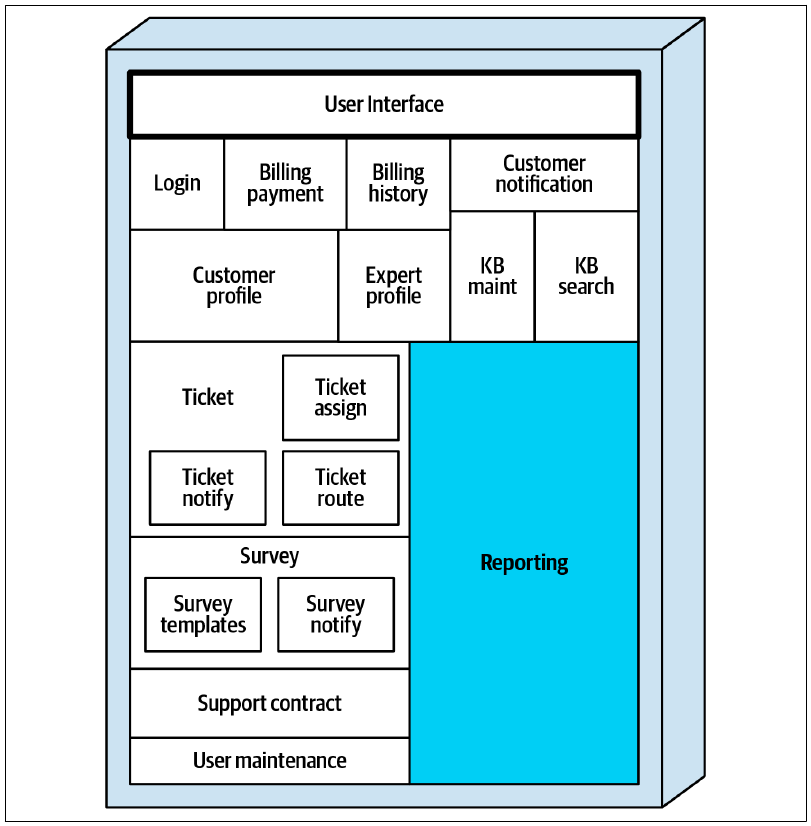
经过分析，Addison 发现“报表”组件包含实现三类报表的源代码：
- 工单报表，例如工单人口统计、每日/每周/每月工单数量、工单解决时间等。
- 专家报表，例如专家利用率、专家分布等。
- 财务报表，例如维修成本、专家成本、利润等。
Addison 还找到了所有报表类别都会使用的公共代码，包括通用工具、计算器、共享数据查询、报表分发和共享数据格式化器。她为这次重构创建了一则架构故事，并向开发团队作了说明。
负责该架构故事的 Sysops Squad 开发人员 Sydney 重构了代码，把单一“报表”组件拆成四个独立组件：一个包含公共代码的“报表共享”组件，以及分别代表三个功能报表领域的“工单报表”“专家报表”和“财务报表”组件，如图 图 5.3 所示。
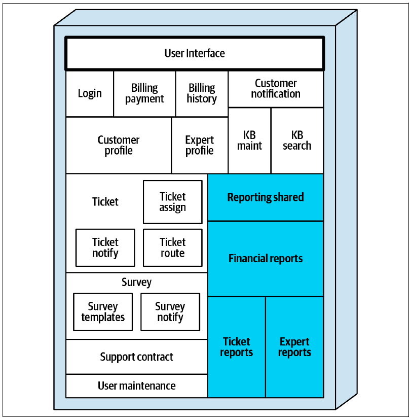
Sydney 提交变更后，Addison 重新分析代码，确认所有组件的大小已经分布得相当均匀。她把应用这个分解模式后的结果记录在表 表格 5.3 中。
| 组件名称 | 组件命名空间 | 百分比 | 语句数 | 文件数 |
|---|---|---|---|---|
| 登录 | ss.login |
2 | 1,865 | 3 |
| 账单支付 | ss.billing.payment |
5 | 4,312 | 23 |
| 账单历史 | ss.billing.history |
4 | 3,209 | 17 |
| 客户通知 | ss.customer.notification |
2 | 1,433 | 7 |
| 客户资料 | ss.customer.profile |
5 | 4,012 | 16 |
| 专家资料 | ss.expert.profile |
6 | 5,099 | 32 |
| 知识库维护 | ss.kb.maintenance |
2 | 1,701 | 14 |
| 知识库搜索 | ss.kb.search |
3 | 2,871 | 4 |
| 报表共享 | ss.reporting.shared |
7 | 5,309 | 20 |
| 工单报表 | ss.reporting.tickets |
8 | 6,955 | 58 |
| 专家报表 | ss.reporting.experts |
9 | 7,734 | 48 |
| 财务报表 | ss.reporting.financial |
9 | 7,767 | 36 |
| 工单 | ss.ticket |
8 | 7,009 | 45 |
| 工单分配 | ss.ticket.assign |
9 | 7,845 | 14 |
| 工单通知 | ss.ticket.notify |
2 | 1,765 | 3 |
| 工单路由 | ss.ticket.route |
2 | 1,468 | 4 |
| 支持合同 | ss.supportcontract |
5 | 4,104 | 24 |
| 调查 | ss.survey |
3 | 2,204 | 5 |
| 调查通知 | ss.survey.notify |
2 | 1,299 | 3 |
| 调查模板 | ss.survey.templates |
2 | 1,672 | 7 |
| 用户维护 | ss.users |
4 | 3,298 | 12 |
请注意，在上述 Sysops Squad 案例中，“报表”已不再作为组件出现在表 表格 5.3 或图 图 5.3 中。虽然命名空间 ss.reporting 仍然存在，但它现在是一个子领域，不再被视为组件。表 表格 5.3 所列的重构后组件，将用于应用下一个分解模式：“汇集公共领域组件”。
5.3 “汇集公共领域组件”模式
从单体架构迁移到分布式架构时，识别并整合公共领域功能通常很有帮助，因为这样更容易识别和创建公共服务。“汇集公共领域组件”模式用于识别、收集公共领域逻辑，并将其集中到单一组件中。
5.3.1 模式说明
共享领域功能与共享基础设施功能有所不同。领域功能是应用业务处理逻辑的一部分，例如通知、数据格式化和数据验证，并且只为部分处理流程所共有；基础设施功能则具有运维性质，例如日志记录、指标采集和安全，并且为全部处理流程所共有。
拆分单体系统时，整合公共领域功能有助于消除重复服务。散布在应用各处的公共领域功能往往只有非常细微的差异，而这些差异通常可以在单一公共服务或共享库中轻松解决。
查找公共领域功能主要依靠人工分析，但也可以借助一定程度的自动化。组件之间共享类，或者多个组件使用共同的继承结构，都是应用中存在公共领域处理的线索。
例如，在大型代码库中有一个名为 SMTPConnection 的类文件，被位于五个不同命名空间，也就是五个组件中的五个类使用。这很可能说明公共电子邮件通知功能散布在整个应用中，适合进行整合。
还可以通过逻辑组件名称或其对应命名空间识别公共领域功能。假设大型代码库中存在以下组件：
- 工单审计：
penultimate.ss.ticket.audit - 账单审计：
penultimate.ss.billing.audit - 调查审计：
penultimate.ss.survey.audit
这三个组件的共同点，是把执行的操作以及请求该操作的用户写入审计表。它们的上下文可能不同，但最终结果相同：在审计表中插入一行。可以把这项公共领域功能整合到名为 penultimate.ss.shared.audit 的新组件中，从而减少代码重复，并减少最终分布式架构中的服务数量。
并非所有公共领域功能都一定要变成共享服务。另一种做法是把公共代码汇集到共享库中，在编译期间与代码绑定。第 8 章将详细讨论使用共享服务与共享库各自的优缺点。
5.3.2 治理适应度函数
共享功能的识别具有主观性，而且还要判断它属于领域功能还是基础设施功能，因此很难实现完全自动化的共享领域功能治理。治理这个模式所用的适应度函数大多需要一定的人工参与。不过，仍然可以通过自动化帮助人工识别公共领域功能。以下适应度函数可用于查找这类功能。
5.3.2.1 适应度函数：查找组件命名空间叶节点中的公共名称
这个自动化整体适应度函数可由 CI/CD 流水线在部署时触发，用于查找组件命名空间中的公共名称。如果两个或更多组件的命名空间具有相同的末端节点名称，系统就会提醒架构师，由其分析相应功能是否属于公共领域逻辑。
为了避免持续重复发送“误报”，可以使用排除文件保存那些末端节点名称相同、但并不属于公共领域逻辑的命名空间，例如多个以 .calculate 或 .validate 结尾的命名空间。示例 5-4 展示了这个适应度函数的伪代码。
示例 5-4：查找公共命名空间叶节点名称的伪代码
# 遍历目录结构，为每条完整路径创建命名空间
LIST component_list = identify_components(root_directory)
# 查找数据存储排除列表之外可能重复的组件节点名称
LIST excluded_leaf_node_list = read_datastore()
LIST leaf_node_list
LIST common_component_list
FOREACH component IN component_list {
leaf_name = get_last_node(component)
IF leaf_name IN leaf_node_list AND
leaf_name NOT IN excluded_leaf_node_list {
ADD component TO common_component_list
} ELSE {
ADD leaf_name TO leaf_node_list
}
}
# 如果发现可能的公共组件，则发送提醒
IF common_component_list NOT EMPTY {
send_alert(common_component_list)
}5.3.2.2 适应度函数：查找跨组件的公共代码
这个自动化整体适应度函数可由 CI/CD 流水线在部署时触发，用于查找不同命名空间之间共用的类。它并非总是准确，但可以提醒架构师注意可能重复的领域功能。与前一项适应度函数一样，它使用排除文件减少误报，把已知共享、但不属于重复领域逻辑的代码排除在外。示例 5-5 展示了这个适应度函数的伪代码。
示例 5-5：查找组件间公共源文件的伪代码
# 遍历目录结构，为每条完整路径创建命名空间，
# 并获取每个组件的源文件名称列表
LIST component_list = identify_components(root_directory)
LIST source_file_list = get_source_files(root_directory)
MAP component_source_file_map
FOREACH component IN component_list {
LIST component_source_file_list = get_source_files(component)
ADD component, component_source_file_list TO component_source_file_map
}
# 查找跨组件使用且不在数据存储排除列表中的公共源文件
LIST excluded_source_file_list = read_datastore()
LIST common_source_file_list
FOREACH source_file IN source_file_list {
SET count TO 0
FOREACH component,component_source_file_list IN component_source_file_map {
IF source_file IN component_source_file_list {
ADD 1 TO count
}
}
IF count > 1 AND source_file NOT IN excluded_source_file_list {
ADD source_file TO common_source_file_list
}
}
# 如果某些源文件被多个组件使用，则发送提醒
IF common_source_file_list NOT EMPTY {
send_alert(common_source_file_list)
}5.3.3 Sysops Squad 案例：汇集公共组件
11 月 5 日，星期五，10:34
识别 Sysops Squad 应用的组件并确定其大小之后，Addison 应用“汇集公共领域组件”模式，检查各组件之间是否存在公共功能。她从表 表格 5.3 的组件列表中发现，有三个组件都与向 Sysops Squad 客户发送通知有关，于是把它们列入表 表格 5.4。
| 组件 | 命名空间 | 职责 |
|---|---|---|
| 客户通知 | ss.customer.notification |
常规通知 |
| 工单通知 | ss.ticket.notify |
通知专家正在赶来 |
| 调查通知 | ss.survey.notify |
发送调查电子邮件 |
虽然这些通知组件分别在不同的上下文中通知客户，但 Addison 意识到它们有一个共同点：都在向客户发送信息。图 图 5.4 展示了 Sysops Squad 应用中的这些公共通知组件。
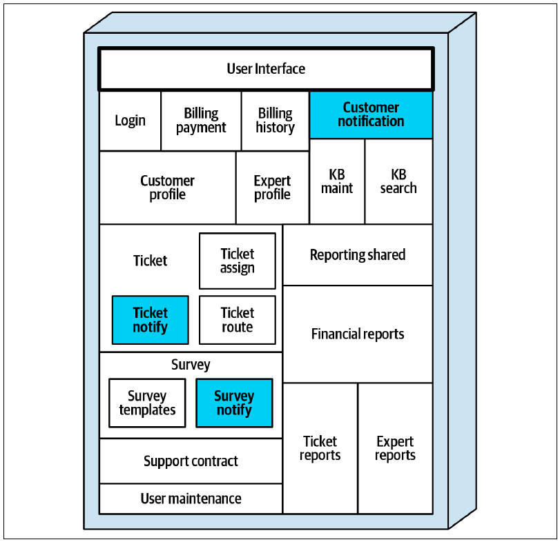
Addison 还注意到，这些组件中的源代码也非常相似，于是与另一位 Sysops Squad 架构师 Austen 商量。Austen 赞成建立单一通知组件，但担心这会影响组件之间的整体耦合程度。Addison 同意这可能是个问题，因此进一步研究了这项权衡。
Addison 分析了现有 Sysops Squad 通知组件的传入耦合程度，得到表 表格 5.5 所示的耦合指标。其中 CA 表示需要该组件的其他组件数量，也就是传入耦合。
| 组件 | CA | 使用方 |
|---|---|---|
| 客户通知 | 2 | 账单支付、支持合同 |
| 工单通知 | 2 | 工单、工单路由 |
| 调查通知 | 1 | 调查 |
Addison 随后发现，如果把客户通知功能整合到单一组件中，新组件的传入耦合会增加到 5，如表 表格 5.6 所示。
| 组件 | CA | 使用方 |
|---|---|---|
| 通知 | 5 | 账单支付、支持合同、工单、工单路由、调查 |
Addison 把这些发现告诉 Austen，两人讨论了分析结果。他们发现，新整合组件的传入耦合虽然相当高，却没有改变“通知客户”这项功能的整体传入耦合。换句话说，三个独立组件的传入耦合总和是 5，单一整合组件的传入耦合同样是 5。
Addison 和 Austen 都认识到，整合公共领域功能之后分析耦合程度非常重要。在某些情况下，把公共领域功能合并到单一组件中会提高该组件的传入耦合，使应用中的过多组件依赖同一个共享组件。不过在这个案例中，两人都认可耦合分析结果，同意整合通知功能，以减少代码和功能重复。
Addison 编写了一则架构故事，要求把全部通知功能合并到代表公共“通知”组件的单一命名空间中。负责该架构故事的 Sydney 重构了源代码，为客户通知创建了一个组件，如图 图 5.5 所示。
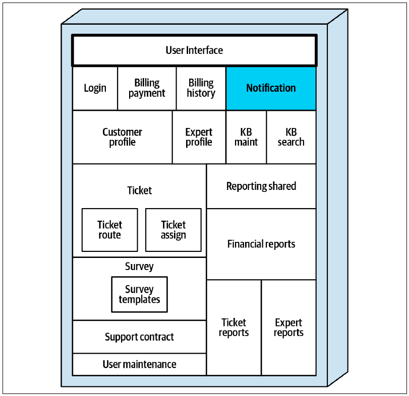
表 表格 5.7 展示了 Sydney 实现 Addison 所写架构故事之后的组件。可以看到，“客户通知”组件（ss.customer.notification）、“工单通知”组件（ss.ticket.notify）和“调查通知”组件（ss.survey.notify）已经移除，源代码则迁移到新的整合“通知”组件（ss.notification）中。
| 组件 | 命名空间 | 职责 |
|---|---|---|
| 登录 | ss.login |
用户和客户登录 |
| 账单支付 | ss.billing.payment |
客户月度账单 |
| 账单历史 | ss.billing.history |
支付历史 |
| 客户资料 | ss.customer.profile |
维护客户资料 |
| 专家资料 | ss.expert.profile |
维护专家资料 |
| 知识库维护 | ss.kb.maintenance |
维护和查看知识库 |
| 知识库搜索 | ss.kb.search |
搜索知识库 |
| 通知 | ss.notification |
所有客户通知 |
| 报表共享 | ss.reporting.shared |
共享功能 |
| 工单报表 | ss.reporting.tickets |
创建工单报表 |
| 专家报表 | ss.reporting.experts |
创建专家报表 |
| 财务报表 | ss.reporting.financial |
创建财务报表 |
| 工单 | ss.ticket |
工单创建与维护 |
| 工单分配 | ss.ticket.assign |
为工单分配专家 |
| 工单路由 | ss.ticket.route |
把工单发送给专家 |
| 支持合同 | ss.supportcontract |
维护支持合同 |
| 调查 | ss.survey |
发送和接收调查 |
| 调查模板 | ss.survey.templates |
维护调查模板 |
| 用户维护 | ss.users |
维护内部用户 |
5.4 “扁平化组件”模式
如前所述，组件是应用的构建块，通常通过命名空间、包结构或目录结构来识别，并由这些结构中包含的类文件或源代码文件实现。然而，当组件建立在其他组件之上，而后者又建立在更多组件之上时，组件便开始失去自身身份，不再符合我们的组件定义。“扁平化组件”模式确保组件不会层层叠加，而是被扁平化，表现为目录结构或命名空间中的叶节点。
5.4.1 模式说明
当代表某个组件的命名空间被扩展，也就是命名空间或目录结构中又增加了一个节点时，原先的命名空间或目录便不再代表组件，而是代表一个子领域。
以 Sysops Squad 应用的客户调查功能为例，它由两个组件表示：“调查”（ss.survey）和“调查模板”（ss.survey.templates）。表 表格 5.8 中，ss.survey 命名空间包含五个用于管理和收集调查的类文件；该命名空间又通过 ss.survey.templates 得到扩展，后者包含七个类，分别表示发送给客户的调查类型。
| 组件名称 | 组件命名空间 | 文件数 |
|---|---|---|
| → 调查 | ss.survey |
5 |
| 调查模板 | ss.survey.templates |
7 |
从开发人员的角度看，这种结构似乎很合理，因为它把模板代码与调查处理分开。不过，这也会产生问题：“调查模板”作为一个组件，会被认为是“调查”组件的一部分。人们可能倾向于把“调查模板”视为“调查”的子组件，但尝试从这些组件形成服务时，问题便会出现：两个组件应当都放在名为“调查”的单一服务中，还是“调查模板”应当成为与“调查”分开的服务？
我们通过把组件定义为命名空间或目录结构的最后一个节点，也就是叶节点，解决了这个两难问题。按照这一定义，ss.survey.templates 是组件，而 ss.survey 是子领域，不是组件。我们还把 ss.survey 这样的命名空间称为根命名空间，因为它被其他命名空间节点扩展，此处就是 .templates。
请注意，表 表格 5.8 中的 ss.survey 根命名空间包含五个类文件。我们称这些文件为孤立类，因为它们不属于任何可定义的组件。组件由包含源代码的叶节点命名空间来识别。由于 ss.survey 已经通过 .templates 得到扩展，它不再被视为组件，因此其中不应包含任何类文件。
理解和应用“扁平化组件”分解模式时，以下术语及定义十分重要：
- 组件
-
在叶节点命名空间中分组的一组类，负责应用中的某项特定功能，例如支付处理或客户调查。
- 根命名空间
-
被另一个命名空间节点扩展的命名空间节点。例如，在
ss.survey与ss.survey.templates中，ss.survey被.templates扩展，因此是根命名空间。根命名空间有时也称为子领域。 - 孤立类
-
位于根命名空间中的类，因此没有对应的可定义组件。
图 图 5.6 展示了这些定义，其中标有 C 的方框表示相应命名空间中包含源代码。这张图以及本章其他类似图示特意采用自下而上的方向，强调应用中的“山丘”以及命名空间层层建立的概念。
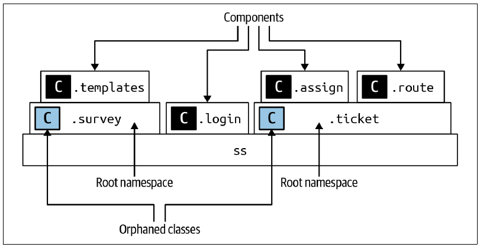
由于 ss.survey 和 ss.ticket 都被其他命名空间节点扩展，它们被视为根命名空间，其中包含的类也就成了孤立类，不属于任何已定义组件。因此，图 图 5.6 中只有 ss.survey.templates、ss.login、ss.ticket.assign 和 ss.ticket.route 是组件。
“扁平化组件”模式通过移动孤立类，创建只存在于目录或命名空间叶节点中的定义良好的组件，并在此过程中形成定义良好的子领域，也就是根命名空间。我们把组件扁平化定义为拆解或扩展应用中的命名空间，以消除孤立类。
例如，要扁平化图 图 5.6 中的 ss.survey 根命名空间并消除孤立类，一种方式是把 ss.survey.templates 中的源代码向下移动到 ss.survey，让 ss.survey 成为单一组件，因为 .survey 此时已经成为命名空间的叶节点。图 图 5.7 展示了这种扁平化方案。
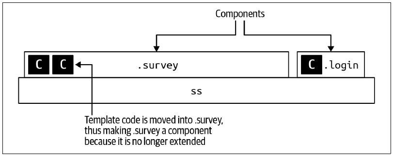
.survey 命名空间，从而扁平化“调查”
另一种扁平化方式，是对 ss.survey 中的源代码进行功能分解或领域驱动设计，识别根命名空间中的独立功能区域，再从这些功能区域形成组件。
例如，假设 ss.survey 命名空间中的功能会创建调查并发送给客户，随后处理从客户处收到的已完成调查，那么可以从中创建两个组件：ss.survey.create 负责创建和发送调查，ss.survey.process 负责处理客户返回的调查。图 图 5.8 展示了这种扁平化方式。

无论朝哪个方向扁平化，都要确保源代码文件只存在于叶节点命名空间或目录中，使每份源代码始终能够归属于某个明确组件。
另一个常见场景是：供同一命名空间中其他组件共享的代码位于根命名空间中。图 图 5.9 中，客户调查功能分布在三个组件里：ss.survey.templates、ss.survey.create 和 ss.survey.process；但接口、抽象类、通用工具等公共代码位于根命名空间 ss.survey 中。
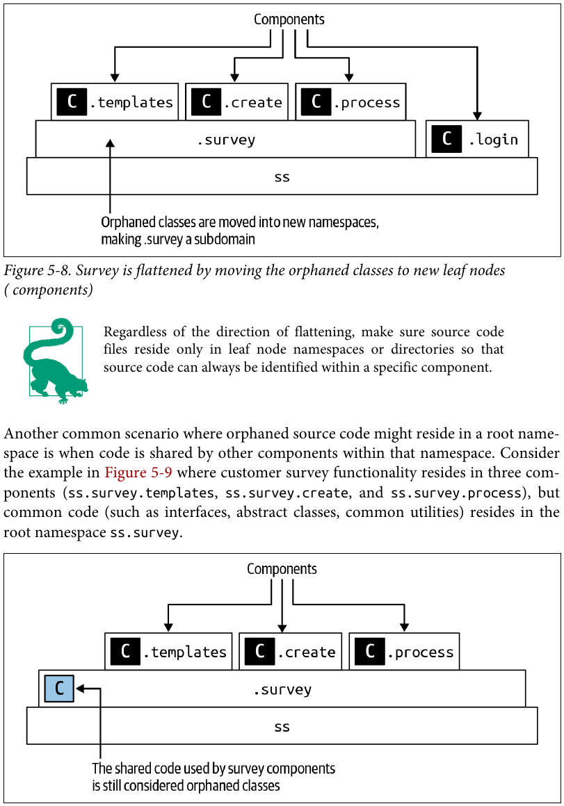
.survey 中的共享代码属于孤立类，应当移动
ss.survey 中的共享类即使代表共享代码，仍然属于孤立类。应用“扁平化组件”模式时，应把这些孤立的共享类移动到名为 ss.survey.shared 的新组件，从 ss.survey 子领域中消除全部孤立类，如图 图 5.10 所示。
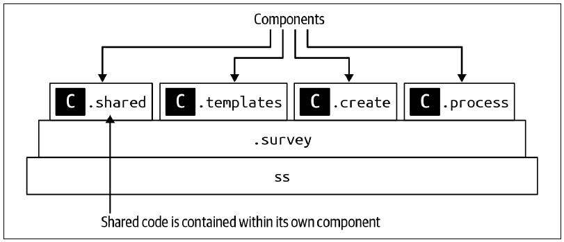
把共享代码移动到独立组件，也就是叶节点命名空间时，我们建议选择领域现有代码库中没有使用的词，例如 .sharedcode、.commoncode 或其他独特名称。这样，架构师就可以生成代码库共享组件数量、以及应用中共享源代码百分比等指标。这些指标能很好地反映拆分单体应用是否可行。
例如，如果所有以 .sharedcode 结尾的命名空间中的语句总数占整个源代码的 45%，那么迁移到分布式架构很可能会产生过多共享库，并因为共享库依赖而变得极难维护。
分析共享代码时，另一个有效指标是以 .sharedcode 或其他公共共享命名空间节点结尾的组件数量。这个指标可以让架构师了解拆分单体应用后会产生多少共享库，例如 JAR、DLL 等，或者多少共享服务。
5.4.2 治理适应度函数
应用“扁平化组件”分解模式需要相当多的主观判断。例如，是把叶节点中的代码合并到根命名空间，还是把根命名空间中的代码移动到叶节点？尽管如此，下面的适应度函数仍可以帮助自动治理，让组件保持扁平，也就是只存在于叶节点中。
5.4.2.1 适应度函数：根命名空间中不得包含源代码
这个自动化整体适应度函数可由 CI/CD 流水线在部署时触发，用于查找位于根命名空间中的孤立类。在单体迁移过程中，特别是迁移期间仍需持续维护单体应用时，这项函数有助于保持组件扁平。示例 5-6 的伪代码会在代码库任何位置出现孤立类时提醒架构师。
示例 5-6：查找根命名空间中代码的伪代码
# 遍历目录结构，为每条完整路径创建命名空间
LIST component_list = identify_components(root_directory)
# 如果任何组件的非叶节点中包含源文件，则发送提醒
FOREACH component IN component_list {
LIST component_node_list = get_nodes(component)
FOREACH node IN component_node_list {
IF contains_code(node) AND NOT last_node(component_node_list) {
send_alert(component)
}
}
}5.4.3 Sysops Squad 案例：扁平化组件
11 月 10 日，星期三，11:10
应用“汇集公共领域组件”模式之后，Addison 分析表 表格 5.7 中的结果，发现“调查”和“工单”组件包含孤立类。她在表 表格 5.9 和图 图 5.11 中标出了这些组件。
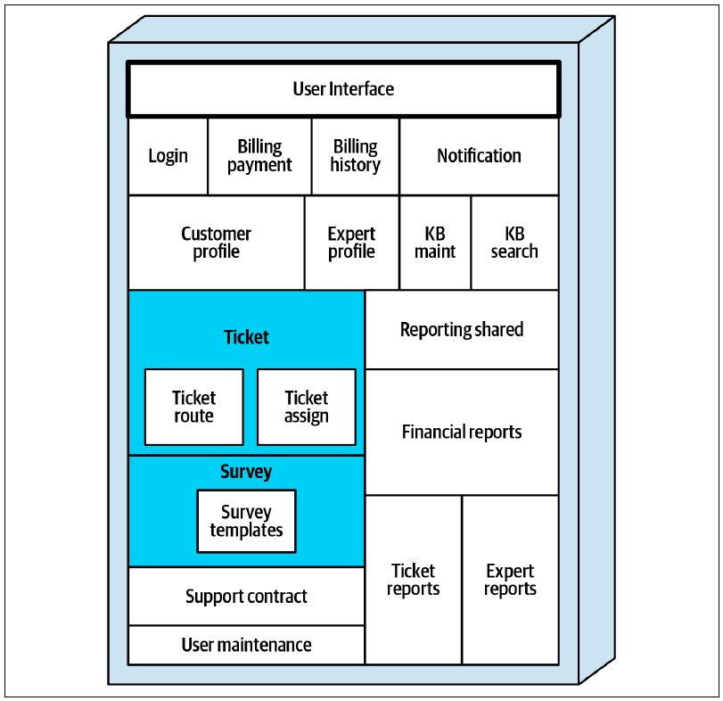
| 组件名称 | 组件命名空间 | 语句数 | 文件数 |
|---|---|---|---|
| 工单 | ss.ticket |
7,009 | 45 |
| 工单分配 | ss.ticket.assign |
7,845 | 14 |
| 工单路由 | ss.ticket.route |
1,468 | 4 |
| 调查 | ss.survey |
2,204 | 5 |
| 调查模板 | ss.survey.templates |
1,672 | 7 |
Addison 决定先处理工单组件。她知道扁平化组件意味着消除非叶节点中的源代码，因此有两种选择：把“工单分配”和“工单路由”组件中的代码合并到 ss.ticket 组件；或者把 ss.ticket 中的 45 个类拆成独立组件，使 ss.ticket 成为子领域。
Addison 与 Sysops Squad 开发人员 Sydney 讨论了这些方案。考虑到工单分配功能很复杂而且经常变化，两人决定保留现有独立组件，并把 ss.ticket 根命名空间中的孤立代码移动到其他命名空间，形成新组件。
在 Sydney 的帮助下，Addison 发现 ss.ticket 命名空间中的 45 个孤立类实现了以下工单功能：
- 工单创建与维护，例如创建、更新、取消工单等。
- 工单完成逻辑。
- 大多数工单功能都会使用的共享代码。
工单分配和工单路由功能已经分别位于自己的组件 ss.ticket.assign 和 ss.ticket.route 中，因此 Addison 创建了一则架构故事，把 ss.ticket 命名空间中的源代码移动到三个新组件，结果如表 表格 5.10 所示。
| 组件 | 命名空间 | 职责 |
|---|---|---|
| 工单共享 | ss.ticket.shared |
公共代码和工具 |
| 工单维护 | ss.ticket.maintenance |
添加和维护工单 |
| 工单完成 | ss.ticket.completion |
完成工单并发起调查 |
| 工单分配 | ss.ticket.assign |
为工单分配专家 |
| 工单路由 | ss.ticket.route |
把工单发送给专家 |
Addison 接着考虑调查功能。她与 Sydney 一起分析后发现，调查功能很少变化，也不过分复杂。Sydney 找到最初创建 ss.survey.templates 命名空间的开发人员 Skyler，得知并没有必须把调查模板分到独立命名空间的充分理由。“当时只是觉得这样做不错。”Skyler 说。
得到这些信息后，Addison 创建了一则架构故事，把 ss.survey.templates 中的七个类文件移动到 ss.survey 命名空间，并移除 ss.survey.template 组件，如表 表格 5.11 所示。
| 组件 | 命名空间 | 职责 |
|---|---|---|
| 调查 | ss.survey |
发送和接收调查 |
应用“扁平化组件”模式之后，如图 图 5.12 所示，Addison 确认系统中已经没有“山丘”，也就是组件之上的组件，也没有孤立类；所有组件都只存在于相应命名空间的叶节点中。
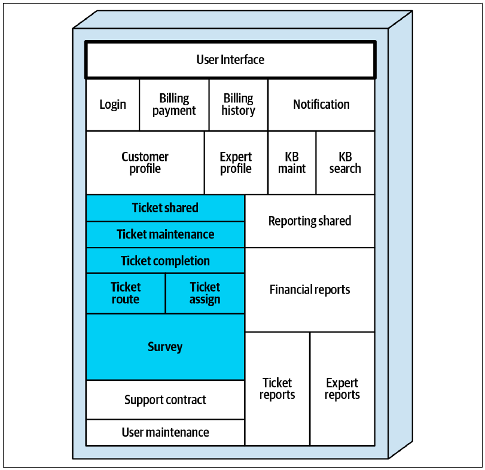
Addison 记录了迄今为止应用这些分解模式所完成的重构结果，并把它们列入表 表格 5.12。
| 组件 | 命名空间 |
|---|---|
| 登录 | ss.login |
| 账单支付 | ss.billing.payment |
| 账单历史 | ss.billing.history |
| 客户资料 | ss.customer.profile |
| 专家资料 | ss.expert.profile |
| 知识库维护 | ss.kb.maintenance |
| 知识库搜索 | ss.kb.search |
| 通知 | ss.notification |
| 报表共享 | ss.reporting.shared |
| 工单报表 | ss.reporting.tickets |
| 专家报表 | ss.reporting.experts |
| 财务报表 | ss.reporting.financial |
| 工单共享 | ss.ticket.shared |
| 工单维护 | ss.ticket.maintenance |
| 工单完成 | ss.ticket.completion |
| 工单分配 | ss.ticket.assign |
| 工单路由 | ss.ticket.route |
| 支持合同 | ss.supportcontract |
| 调查 | ss.survey |
| 用户维护 | ss.users |
5.5 “确定组件依赖关系”模式
考虑把单体应用迁移到分布式架构时，人们最常提出的三个问题是：
- 拆分现有单体应用是否可行？
- 这次迁移的总体工作量大致有多大？
- 需要重写代码，还是只需重构代码？
几年前，本书一位作者参与了把复杂单体应用迁移到微服务的大型项目。项目第一天，CIO 只想知道一件事：这次迁移的规模是一颗高尔夫球、一个篮球，还是一架客机？作者起初对这种规模比喻感到好奇，但 CIO 坚持认为，既然只是如此粗粒度的估算，回答这个简单问题不应该太难。
事实证明，应用“确定组件依赖关系”模式，很快就回答了 CIO 的问题。遗憾的是，这次工作属于“客机”规模，不过只是小型 Embraer 190，而不是大型 Boeing 787 Dreamliner。
5.5.1 模式说明
“确定组件依赖关系”模式通过分析组件之间的传入和传出依赖，也就是耦合，判断拆分单体应用后可能形成怎样的服务依赖图。决定合适服务粒度时要考虑许多因素，第 7 章将详细讨论；但根据目标分布式架构风格，单体应用中的每个组件都可能成为服务候选。因此，理解组件之间的交互与依赖至关重要。
需要注意，这个模式关注的是组件依赖，不是组件内部各个类之间的依赖。如果一个组件或命名空间中的类与另一个组件或命名空间中的类发生交互，就形成了组件依赖。
例如，假设 ss.survey 组件中的 CustomerSurvey 类调用 ss.notification 组件中 CustomerNotification 类的方法来发送客户调查，如示例 5-7 的伪代码所示。
示例 5-7：展示“调查”与“通知”组件依赖关系的伪代码
namespace ss.survey
class CustomerSurvey {
function createSurvey {
...
}
function sendSurvey {
...
ss.notification.CustomerNotification.send(customer_id, survey)
}
}由于 CustomerSurvey 使用的 CustomerNotification 类位于 ss.survey 命名空间之外，“调查”与“通知”组件之间便存在依赖。具体来说，“调查”组件对“通知”组件存在传出依赖，而“通知”组件对“调查”组件存在传入依赖。
某个组件内部的类可能形成高度耦合、依赖繁多的混乱结构，但应用这个模式时并不关心这些内部关系；重要的只有组件之间的依赖。
有多种工具可以协助应用这个模式，并可视化组件依赖。许多现代 IDE 也提供插件，能够为特定代码库中的组件或命名空间生成依赖图。这些可视化结果有助于回答本节开头提出的三个关键问题。
例如，图 图 5.13 的方框代表组件而不是类，连线代表组件之间的耦合点。图中组件之间只有一项依赖，说明各组件在功能上彼此独立，这个应用很适合拆分。
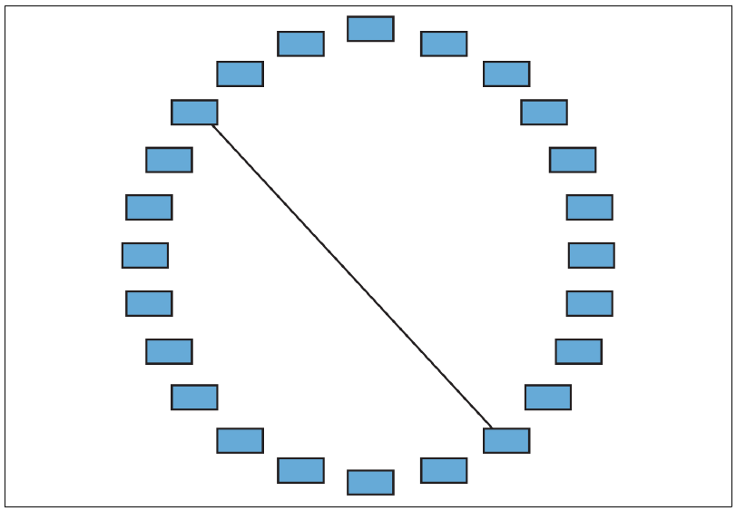
对于图 图 5.13 这样的依赖图，三个关键问题的答案如下：
- 拆分现有单体应用是否可行？是。
- 迁移总体工作量大致有多大？一颗高尔夫球，相对直接。
- 需要重写还是重构代码？重构，把现有代码移动到独立部署的服务中。
再来看图 图 5.14 的依赖图。遗憾的是，大多数业务应用的组件依赖都与此类似。图左侧的耦合程度最高，而右侧看起来更容易拆分。
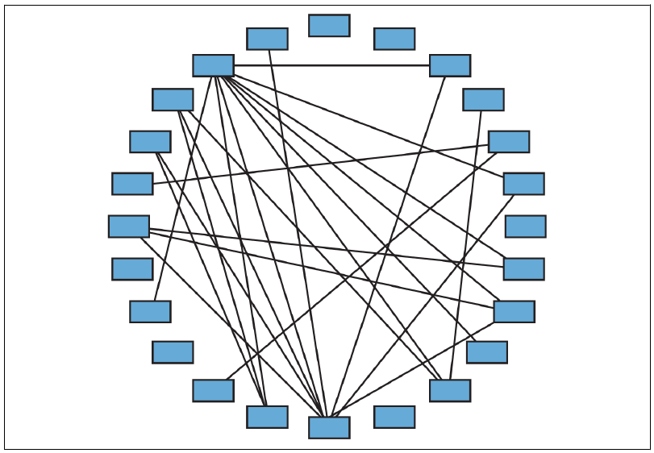
面对这种紧密耦合，三个关键问题的答案就不太乐观：
- 拆分现有单体应用是否可行？也许可行……
- 迁移总体工作量大致有多大？一个篮球，困难得多。
- 需要重写还是重构代码？可能要结合重构与重写。
最后来看图 图 5.15 的依赖图。面对这种情况，架构师应该立刻转身，以最快速度逃离现场！
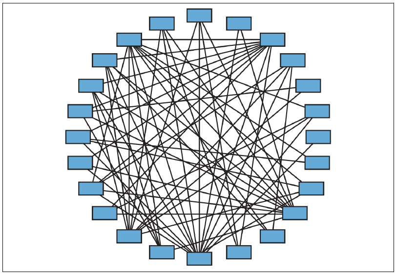
对于具有这种组件依赖矩阵的应用，三个问题的答案并不令人意外：
- 拆分现有单体应用是否可行？不可行。
- 迁移总体工作量大致有多大？一架客机。
- 需要重写还是重构代码？彻底重写整个应用。
拆分单体应用时，这类可视化图的重要性怎么强调都不过分。它们就像雷达，可以定位敌人，也就是高组件耦合所在的位置；同时还能描绘把单体应用拆成高度分布式架构后，可能形成怎样的服务依赖矩阵。
根据我们的经验，组件耦合是决定单体迁移总体成功率与可行性的最重要因素之一。识别并理解组件耦合程度，不仅能让架构师判断迁移是否可行，也能预估总体工作量。
遗憾的是，团队经常在没有任何分析或可视化结果、甚至不了解单体应用内部结构的情况下，直接开始把它拆成微服务。毫不意外，这些团队往往会陷入困境。
这个模式不仅可以识别应用的整体组件耦合程度，也能在拆分应用之前发现重构依赖关系的机会。分析组件耦合时，应同时分析传入耦合和传出耦合。大多数工具分别用 CA 和 CE 表示这两个指标。CT 表示总耦合，是传入与传出耦合之和。
拆分组件往往能够降低该组件的耦合程度。例如，假设组件 A 的传入耦合为 20，也就是有 20 个其他组件依赖它的功能。这不一定意味着所有 20 个组件都需要组件 A 的全部功能；也许其中 14 个只需要组件 A 中很小的一部分。
把组件 A 拆成两个组件，让 A1 包含那部分较小但耦合广泛的功能，A2 包含其余大部分功能，就可以把 A2 的传入耦合降至 6，而 A1 的传入耦合为 14。
5.5.2 治理适应度函数
自动治理组件依赖有两种方式：确保任何组件都不会拥有“过多”依赖，以及禁止某些组件耦合到另一些组件。以下适应度函数展示了治理这些依赖的做法。
5.5.2.1 适应度函数：任何组件的总依赖数不得超过某个数量
这个自动化整体适应度函数可由 CI/CD 流水线在部署时触发，用于确保任何组件的耦合程度不超过指定阈值。最大阈值应由架构师依据应用整体耦合程度和组件数量确定。
函数发出的提醒让架构师可以与开发团队讨论耦合增加的原因，并可能推动团队拆分组件以降低耦合。也可以修改这项函数，分别针对传入依赖、传出依赖或两者设置阈值。示例 5-8 在总耦合，也就是传入与传出耦合之和超过 15 时发出提醒；对大多数应用来说，这已经是较高水平。
示例 5-8：限制单个组件总依赖数的伪代码
# 遍历目录结构，收集组件及其包含的源代码文件
LIST component_list = identify_components(root_directory)
MAP component_source_file_map
FOREACH component IN component_list {
LIST component_source_file_list = get_source_files(component)
ADD component, component_source_file_list TO component_source_file_map
}
# 计算每个源文件的引用数；总依赖数超过 15 时发送提醒
FOREACH component,component_source_file_list IN component_source_file_map {
FOREACH source_file IN component_source_file_list {
incoming_count = used_by_other_components(
source_file, component_source_file_map)
outgoing_count = uses_other_components(source_file)
total_count = incoming_count + outgoing_count
}
IF total_count > 15 {
send_alert(component, total_count)
}
}5.5.2.2 适应度函数：某个组件不得依赖另一个组件
这个自动化整体适应度函数可由 CI/CD 流水线在部署时触发，用于禁止特定组件依赖其他组件。多数情况下，每条依赖限制都会对应一个适应度函数；如果有 10 条不同的组件限制，就会有 10 个函数，分别检查相应组件。
示例 5-9 使用 ArchUnit，确保“工单维护”组件（ss.ticket.maintenance）不能依赖“专家资料”组件（ss.expert.profile）。
示例 5-9：使用 ArchUnit 治理组件依赖限制
public void ticket_maintenance_cannot_access_expert_profile() {
noClasses().that()
.resideInAPackage("..ss.ticket.maintenance..")
.should().accessClassesThat()
.resideInAPackage("..ss.expert.profile..")
.check(myClasses);
}5.5.3 Sysops Squad 案例：识别组件依赖关系
11 月 15 日，星期一，09:45
阅读“确定组件依赖关系”模式之后，Addison 想知道 Sysops Squad 应用的依赖矩阵是什么样，也想判断这个应用究竟能不能拆分。她使用 IDE 插件生成当前 Sysops Squad 应用的组件依赖图。起初 Addison 有些泄气，因为图 图 5.16 显示应用组件之间存在大量依赖。
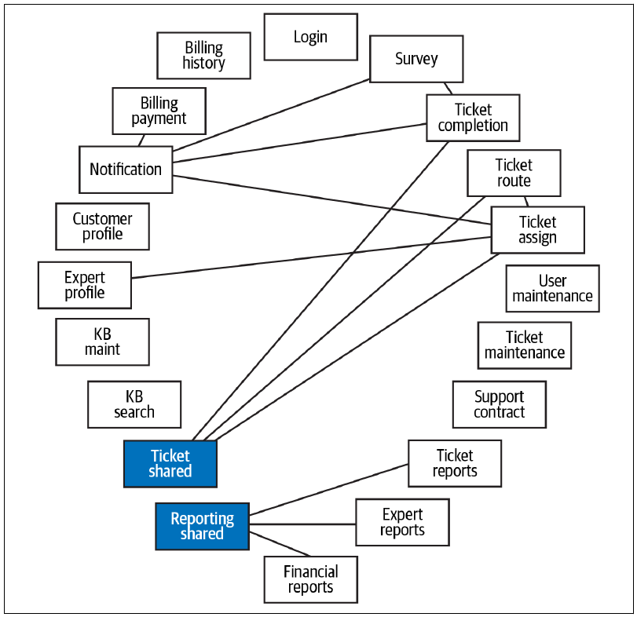
不过，进一步分析后，Addison 发现“通知”组件的依赖最多。它是一个共享组件，因此并不令人意外。她还发现工单和报表组件内部存在许多依赖。这两个领域都有专门的共享代码组件，其中包含接口、辅助类、实体类等。
Addison 意识到，工单和报表的共享代码主要包含编译时类引用，最终很可能实现为共享库，而不是服务。于是，她过滤掉这些组件，以便更清楚地查看应用核心功能之间的依赖，如图 图 5.17 所示。
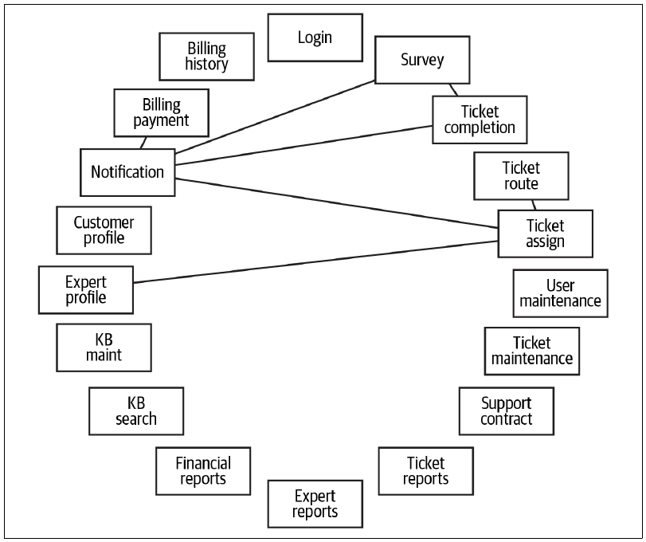
过滤共享组件后，Addison 发现剩余依赖相当少。她把结果展示给 Austen，两人都认为大多数组件相对自包含，Sysops Squad 应用很适合拆成分布式架构。
5.6 “创建组件领域”模式
单体应用中识别出的每个组件都可以视为独立服务的候选，但多数情况下，服务与组件之间是一对多关系，也就是一项服务可以包含一个或多个组件。“创建组件领域”模式的目的，是从逻辑上把组件分组，以便拆分应用时创建更粗粒度的领域服务。
5.6.1 模式说明
识别组件领域，也就是把负责相关功能的组件分到一组，是拆分任何单体应用的关键环节。回顾第 4 章的建议：
拆分单体应用时，可以考虑先迁移到基于服务架构，把它作为走向其他分布式架构的垫脚石。
创建组件领域，是确定哪些内容最终会成为基于服务架构中领域服务的有效方式。
组件领域通过组件命名空间或目录在应用中获得物理表现。命名空间节点具有层次结构，因此很适合表示功能的领域和子领域。图 图 5.18 中，命名空间的第二个节点 .customer 表示领域，第三个节点 .billing 表示客户领域下的子领域，叶节点 .payment 表示组件。命名空间末尾的 .MonthlyBilling 则表示“支付”组件中的类文件。
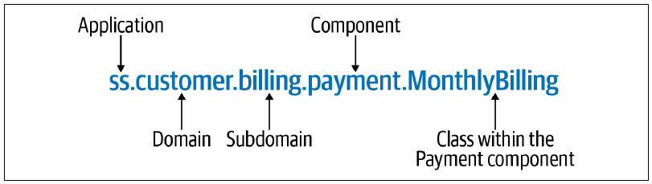
许多较老的单体应用是在领域驱动设计广泛使用之前实现的，因此往往需要重构命名空间，才能在结构上识别应用中的领域。例如，表 表格 5.13 列出了构成 Sysops Squad 应用“客户”领域的组件。
| 组件 | 命名空间 |
|---|---|
| 账单支付 | ss.billing.payment |
| 账单历史 | ss.billing.history |
| 客户资料 | ss.customer.profile |
| 支持合同 | ss.supportcontract |
这些组件都与客户功能有关，但相应命名空间没有体现这种关联。为了正确标识由 ss.customer 命名空间体现的“客户”领域，需要修改“账单支付”“账单历史”和“支持合同”的命名空间，在开头添加 .customer 节点，如表 表格 5.14 所示。
| 组件 | 命名空间 |
|---|---|
| 账单支付 | ss.customer.billing.payment |
| 账单历史 | ss.customer.billing.history |
| 客户资料 | ss.customer.profile |
| 支持合同 | ss.customer.supportcontract |
现在，所有客户相关功能，包括账单、资料维护和支持合同维护，都被归入 .customer，每个组件都与该领域对齐。
5.6.2 治理适应度函数
完成重构后，必须治理组件领域，确保命名空间规则得到执行，也确保组件领域或子领域的上下文之外不存在代码。建立组件领域后，可以使用以下自动化适应度函数进行治理。
5.6.2.1 适应度函数：根命名空间节点下的所有命名空间必须限制在指定领域列表中
这个自动化整体适应度函数可由 CI/CD 流水线在部署时触发，用于限制应用中允许存在的领域。它可以防止开发团队无意间创建额外领域；如果在获批领域列表之外创建了新命名空间或目录，就会提醒架构师。示例 5-10 使用 ArchUnit，确保应用中只存在工单、客户和管理三个领域。
示例 5-10：使用 ArchUnit 治理应用中的领域
public void restrict_domains() {
classes()
.should().resideInAPackage("..ss.ticket..")
.orShould().resideInAPackage("..ss.customer..")
.orShould().resideInAPackage("..ss.admin..")
.check(myClasses);
}5.6.3 Sysops Squad 案例：创建组件领域
11 月 18 日，星期四，13:15
Addison 和 Austen 与 Sysops Squad 产品负责人 Parker 商议，共同识别出应用中的五个主要领域：
- 工单领域（
ss.ticket）：包含所有工单相关功能，包括工单处理、客户调查和知识库功能。 - 报表领域（
ss.reporting）：包含所有报表功能。 - 客户领域（
ss.customer）：包含客户资料、账单和支持合同。 - 管理领域（
ss.admin）：包含用户与 Sysops Squad 专家的维护功能。 - 共享领域（
ss.shared）：包含其他领域使用的登录和通知功能。
Addison 创建了一张领域图，如图 图 5.19 所示，展示各个领域以及其中对应的组件组。她对这种分组很满意，因为没有遗漏组件，而且每个领域中的组件都具有良好的内聚性。
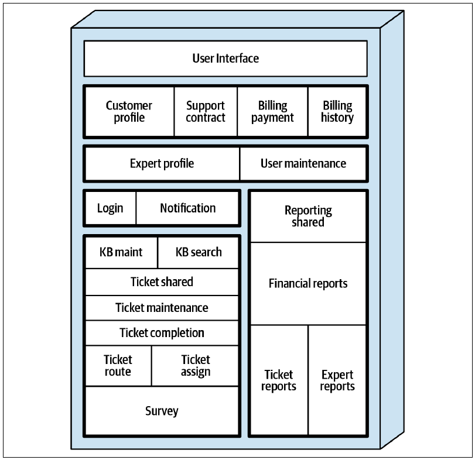
绘制领域图并对组件分组是一项重要练习，因为它既验证了候选领域，也说明必须与产品负责人、业务应用发起人等业务利益相关者协作。如果组件无法正确归组，或者留下了无处归属的组件，Addison 就需要与 Parker 进行更多讨论。
确认所有组件都能自然归入这些领域后，Addison 查看了应用“扁平化组件”模式之后表 表格 5.12 中的组件命名空间，并确定需要进行哪些组件领域重构。
她先检查“工单”领域，发现核心工单功能的命名空间已经以 ss.ticket 开头，但调查和知识库组件并非如此。因此，Addison 编写了一则架构故事，重构表 表格 5.15 中的组件，使其与工单领域对齐。
| 组件 | 领域 | 当前命名空间 | 目标命名空间 |
|---|---|---|---|
| 知识库维护 | 工单 | ss.kb.maintenance |
ss.ticket.kb.maintenance |
| 知识库搜索 | 工单 | ss.kb.search |
ss.ticket.kb.search |
| 工单共享 | 工单 | ss.ticket.shared |
不变 |
| 工单维护 | 工单 | ss.ticket.maintenance |
不变 |
| 工单完成 | 工单 | ss.ticket.completion |
不变 |
| 工单分配 | 工单 | ss.ticket.assign |
不变 |
| 工单路由 | 工单 | ss.ticket.route |
不变 |
| 调查 | 工单 | ss.survey |
ss.ticket.survey |
接着 Addison 检查客户相关组件，发现账单和支持合同组件需要重构到“客户”领域之下，并在此过程中创建“账单”子领域。她为表 表格 5.16 所示的客户领域功能重构编写了架构故事。
| 组件 | 领域 | 当前命名空间 | 目标命名空间 |
|---|---|---|---|
| 账单支付 | 客户 | ss.billing.payment |
ss.customer.billing.payment |
| 账单历史 | 客户 | ss.billing.history |
ss.customer.billing.history |
| 客户资料 | 客户 | ss.customer.profile |
不变 |
| 支持合同 | 客户 | ss.supportcontract |
ss.customer.supportcontract |
通过应用“识别组件并确定其大小”模式，Addison 发现报表领域已经对齐，表 表格 5.17 中的报表组件不需要采取进一步行动。
| 组件 | 领域 | 当前命名空间 | 目标命名空间 |
|---|---|---|---|
| 报表共享 | 报表 | ss.reporting.shared |
不变 |
| 工单报表 | 报表 | ss.reporting.tickets |
不变 |
| 专家报表 | 报表 | ss.reporting.experts |
不变 |
| 财务报表 | 报表 | ss.reporting.financial |
不变 |
Addison 发现“管理”和“共享”领域也需要对齐，于是决定为这项重构创建一则统一的架构故事，并在表 表格 5.18 中列出相关组件。她还决定把 ss.expert.profile 命名空间改名为 ss.admin.experts，避免在“管理”领域下形成没有必要的“专家”子领域。
| 组件 | 领域 | 当前命名空间 | 目标命名空间 |
|---|---|---|---|
| 登录 | 共享 | ss.login |
ss.shared.login |
| 通知 | 共享 | ss.notification |
ss.shared.notification |
| 专家资料 | 管理 | ss.expert.profile |
ss.admin.experts |
| 用户维护 | 管理 | ss.users |
ss.admin.users |
完成这个模式后，Addison 意识到团队已经可以从结构上拆分单体应用，并通过下一节介绍的“创建领域服务”模式，进入分布式架构的第一阶段。
5.7 “创建领域服务”模式
组件经过适当定量、扁平化并归入领域之后，就可以把这些领域迁移到独立部署的领域服务，从而形成所谓的基于服务架构，参见附录 A。领域服务是粗粒度、独立部署的软件单元，包含某个特定领域的全部功能，例如工单、客户或报表。
5.7.1 模式说明
前一节的“创建组件领域”模式在单体应用中形成定义良好的组件领域，并通过组件命名空间或目录结构表现这些领域。本模式把这些组件领域从单体应用中提取出来，形成独立部署的领域服务，从而创建基于服务架构。
基于服务架构最简单的形式，是由用户界面远程访问粗粒度领域服务，而所有服务共享一个单体数据库。基于服务架构还存在许多其他拓扑，例如拆分用户界面、拆分数据库或增加 API 网关；但图 图 5.20 所示的基本拓扑，是迁移单体应用的良好起点。
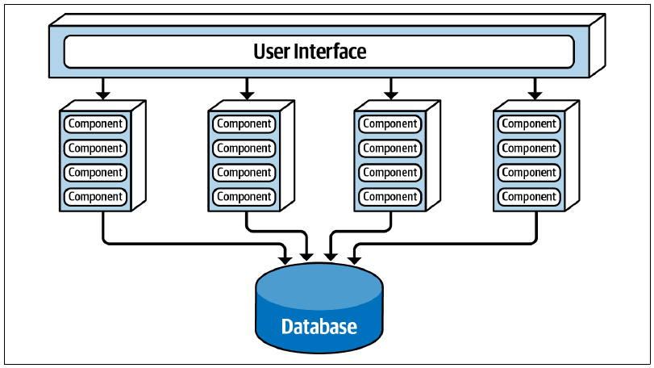
除了第 4 章“基于组件的分解”所述的好处，先迁移到基于服务架构还能让架构师和开发团队进一步了解每项领域服务，从而判断它应当在微服务架构中继续拆成更小的服务，还是保留为较大的领域服务。
太多团队一开始就把服务划分得过细，结果不得不承担微服务的全部复杂性，包括数据分解、分布式工作流、分布式事务、运行自动化和容器化等，却并不真正需要所有这些细粒度微服务。
图 图 5.21 展示了“创建领域服务”模式的工作方式。“创建组件领域”模式所定义的“报表”组件领域从单体应用中提取出来，形成独立部署的“报表”服务。
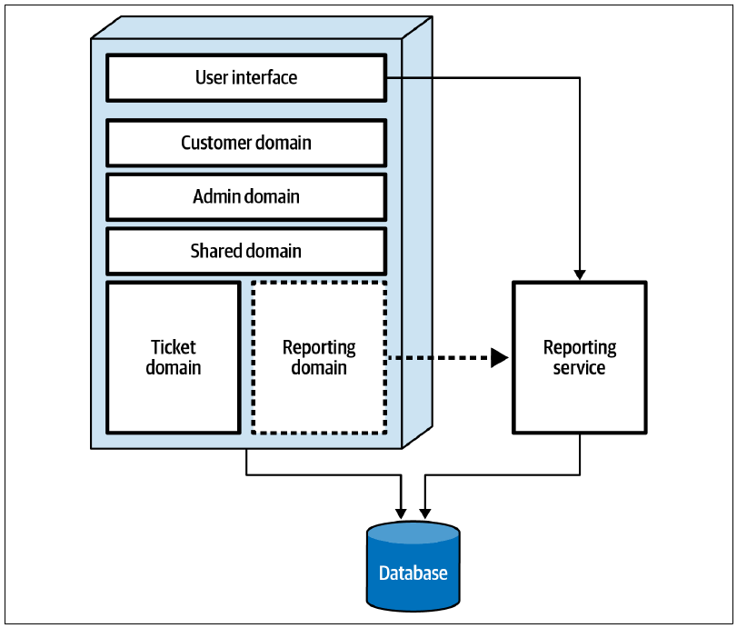
在识别并重构全部组件领域之前，不要应用“创建领域服务”模式。
遵守这一顺序，可以减少移动组件以及相应源代码时需要对每项领域服务进行的修改。
例如，假设 Sysops Squad 应用的全部工单和知识库功能已经分组并重构为“工单”领域，并从中创建了新的“工单”服务。随后，团队又认定客户调查组件，也就是 ss.customer.survey 命名空间，应当属于“工单”领域。由于“工单”领域已经迁移，就必须再次修改“工单”服务，把“调查”组件加入其中。
更好的做法，是先把全部组件对齐并重构到组件领域，再开始把这些组件领域迁移为领域服务。
5.7.2 治理适应度函数
必须让每项领域服务中的组件始终与该领域对齐，尤其是在领域服务未来还要继续拆成更小微服务的情况下。这种治理可以避免领域服务自身变成缺乏结构的新单体。以下适应度函数确保领域服务中的命名空间以及相应组件保持一致。
5.7.2.1 适应度函数：某项领域服务中的所有组件都必须以相同命名空间开头
这个自动化整体适应度函数可由 CI/CD 流水线在部署时触发，确保领域服务中的组件命名空间保持一致。例如，“工单”领域服务中的全部组件都应以 ss.ticket 开头。示例 5-11 使用 ArchUnit 执行这项约束。每项领域服务都应根据自身领域配置相应的适应度函数。
示例 5-11：使用 ArchUnit 治理“工单”领域服务中的组件
public void restrict_domain_within_ticket_service() {
classes().should().resideInAPackage("..ss.ticket..")
.check(myClasses);
}5.7.3 Sysops Squad 案例：创建领域服务
11 月 23 日，星期二，09:04
Addison 和 Austen 与 Sysops Squad 开发团队密切合作，制定了从组件领域逐步迁移到领域服务的计划。他们意识到，这项工作不仅要从单体应用中提取每个组件领域的代码，并把代码移动到新的项目工作区，还要让用户界面改为远程访问相应领域的功能。
团队以图 图 5.19 中先前识别的组件领域为基础，每次迁移一个组件，最终形成图 图 5.22 所示的基于服务架构。前一模式识别的每个领域区域，现在都成为独立部署的服务。
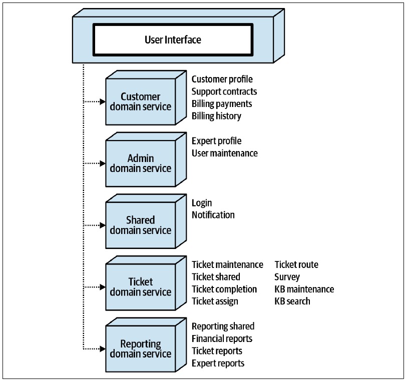
5.8 总结
根据我们的经验，凭感觉进行的迁移很少能取得良好结果。应用本章这些基于组件的分解模式，为拆分单体架构提供了一种结构化、可控且渐进的方法。
应用这些模式之后，团队就可以继续分解单体数据，参见第 6 章；并根据需要，把领域服务进一步拆成更细粒度的微服务，参见第 7 章。